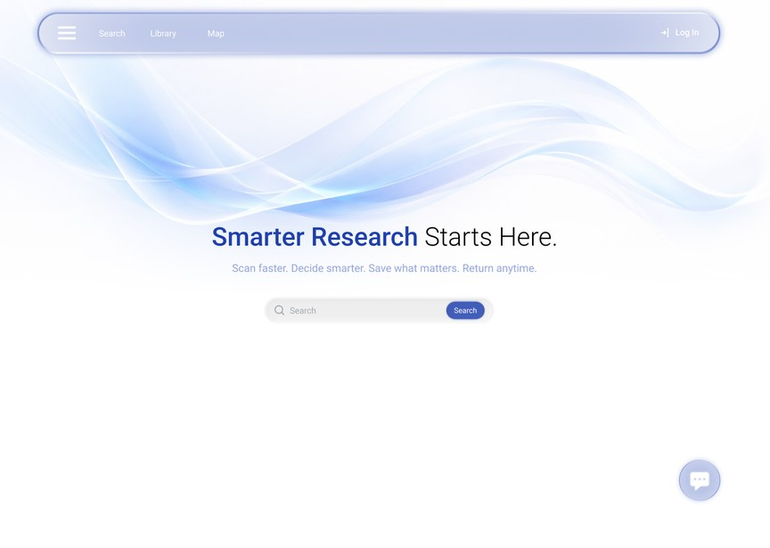
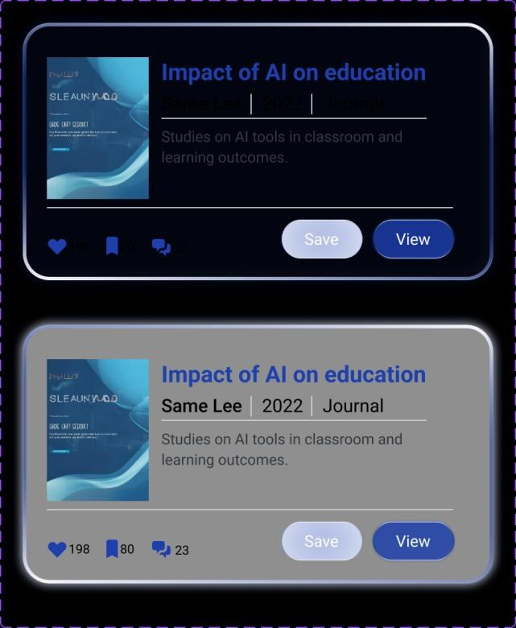
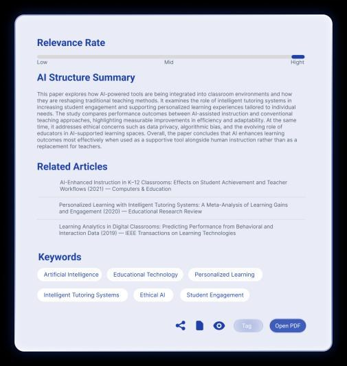
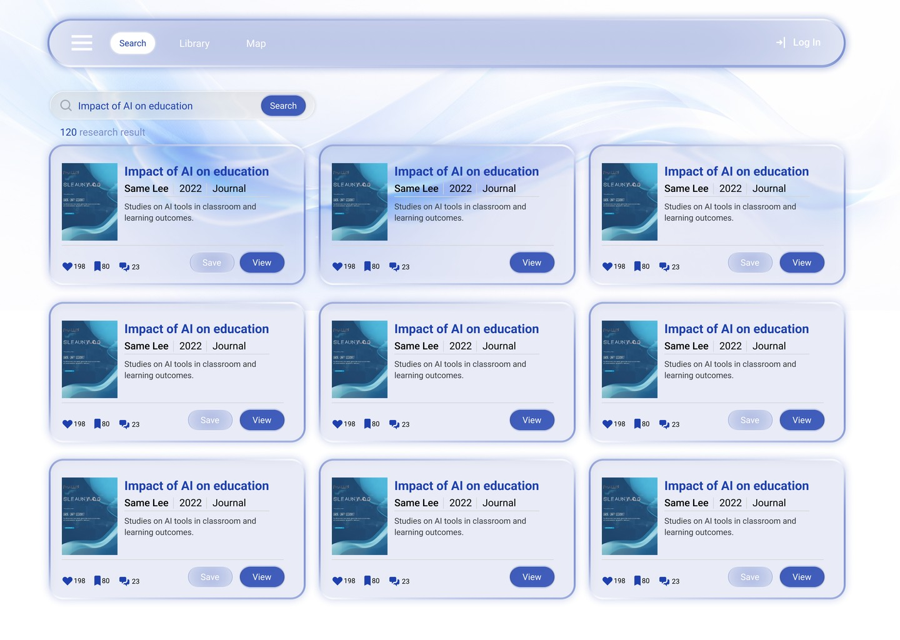
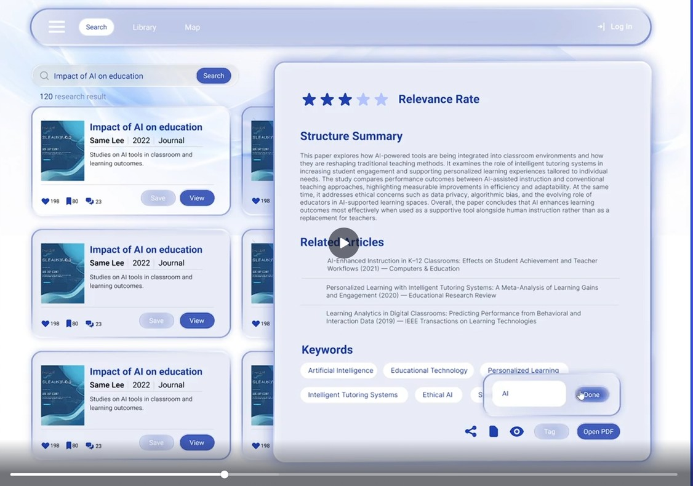
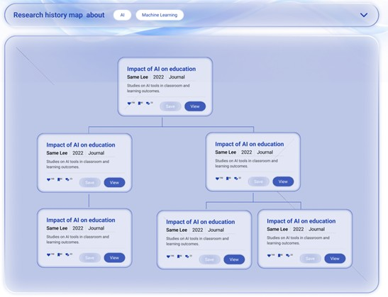
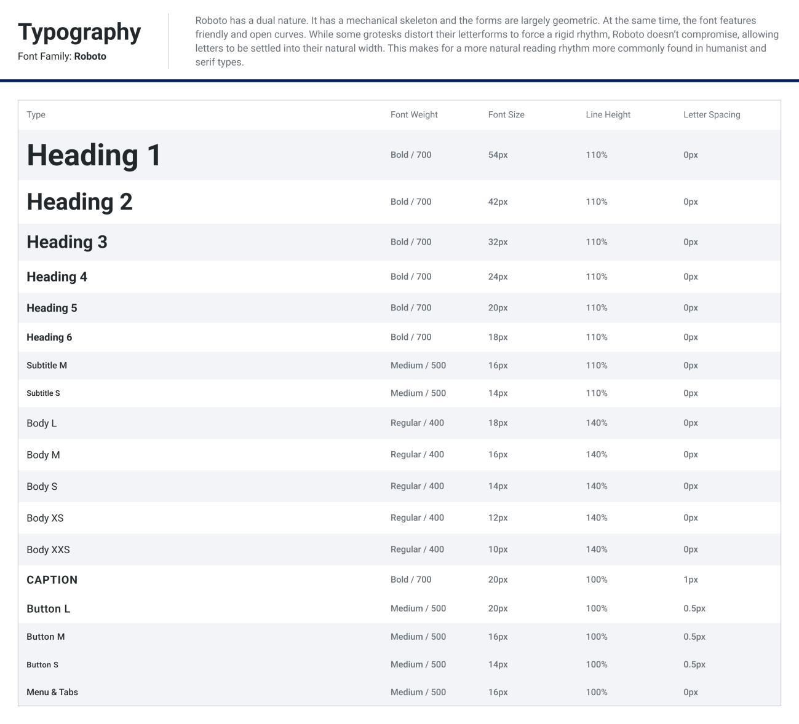
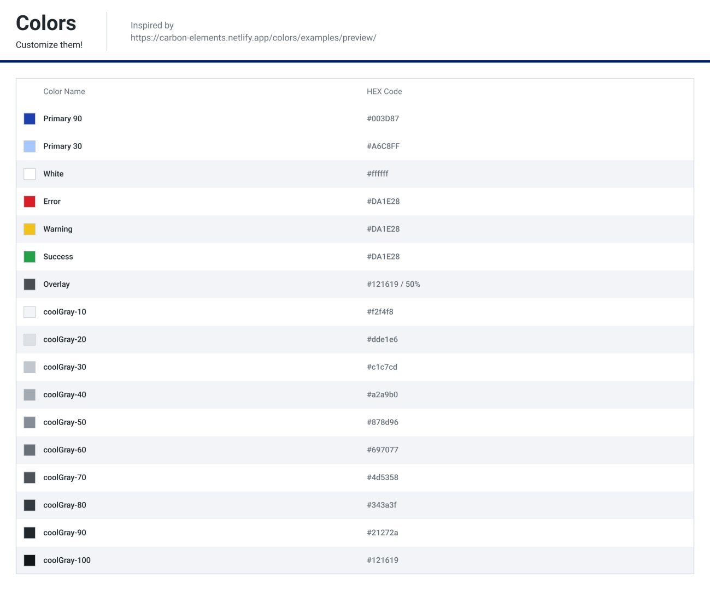

SCAD / IXDS710 / Winter 2026 / Individual project
Smart Research
From a list of papers to a research path you can follow.
A high-fidelity interaction design project connecting discovery, relevance review, and saved sources through Search, Library, and Map.
- Designer
- Zhaolin Hu
- Practice
- UX/UI · Interaction design
Design system · Usability testing - Tools
- Figma
- Outcome
- Interactive Figma prototype
Final deck & video demo

Course prototype. AI responses and recommendation behavior are demonstrated in the design; a live retrieval service is outside the delivered scope. Figma access depends on the file’s sharing settings.
Prototype walkthrough / 1:34
See Smart Research in use.
Full walkthrough extracted from the final presentation, with its original audio. It demonstrates search, paper review, filters, tags, the research map, and the AI assistant interface. Open video directly ↗
01 / Problem & direction
Evaluating a paper should not break the search flow.
Finding a title is only one step. Students also need to judge relevance, understand a paper’s contribution, and remember how one source led to another. Switching between results, abstracts, and PDFs fragments that process.
Design persona: Mellisa
The presentation uses a 21-year-old interdisciplinary undergraduate researching smartphone use and sleep. She needs evidence across HCI/design and health/psychology, where terminology and evidence standards differ. This persona frames the need to assess relevance across disciplines.
Keep evaluation in context
Structured paper cards and a Quick View side panel support an initial relevance check while keeping the results workspace available.
Make research resumable
Library and Map provide complementary ways to revisit saved papers and trace the research journey.
02 / Core interaction
Search → review → save → reconnect.
- Search: enter a topic and refine results using sorting and filters.
- Review: open Quick View for a structured summary, related articles, keywords, and relevance support.
- Verify: consult the original abstract or source before relying on an AI-generated interpretation.
- Save: keep a source in the Library and revisit its relationship to the research path in Map.


Search / Tags / Map
Find a source, organize it, and keep the path.
Search
Autocomplete supports query entry. Structured cards expose the information needed for an initial scan, while Quick View opens a side panel without leaving the results. Filters refine the collection and the selected paper can be opened as a PDF.
Tags
Personal tags group saved papers around the researcher’s own logic. Collections support recall and reuse as the topic develops.


Map
The research map connects queries, saved papers, and related articles so users can backtrack and resume their exploration.

AI assistance
The concept includes a research assistant chatbot for discovering relevant open-access papers. Recommendations are intended to explain the paper’s relevance and access availability. The recorded Figma prototype illustrates the intended interaction rather than a live paper-retrieval service.
03 / States & design system
Design the moments between screens.
The final specification includes loading during AI generation, confirmation after saving a paper, and fallback states when information is missing or a confident summary cannot be produced. Reusable components cover navigation, search autocomplete, filters, paper cards, tags, and the Quick View panel.


04 / Evaluation & learning
Useful summaries still need clear entry points.
The final presentation identifies two users and highlights two qualitative insights: experienced researchers could scan the structured cards, while less experienced users still relied on titles and abstracts; summaries helped with initial understanding, but participants wanted more context about a paper’s contribution. The accompanying report documents search, summary-review, related-content, and saving tasks.
| Observation | Design implication |
|---|---|
| One participant immediately used the summary; another wanted more detail about the paper’s contribution. | Keep a concise overview while making deeper context accessible. |
| One participant initially missed the related-content side panel. | Strengthen visual cues for secondary exploration. |
| The research map’s purpose was initially unclear to one participant. | Explain whether an action saves a paper or reveals connections. |
The final presentation lists two users, consistent with the P1/P2 records in the report. These are qualitative prototype findings, not a measured reading-time improvement or a result that can be generalized to a wider population.
05 / Delivered & next
A completed course prototype, with focused next steps.
The final presentation brings the prototype, Design System v3, usability insights, and improvement directions together. It prioritizes making refinement more discoverable and explaining the research map more clearly. A follow-up evaluation should test whether those changes help users work without guidance.
Sources: IXDS710 Winter 2026 final presentation and final report by Zhaolin Hu. The original 20-slide presentation, including its embedded video, is available above. Interface images and the walkthrough on this page come from those submissions.